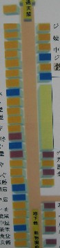
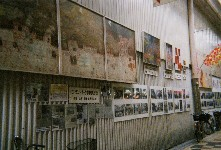
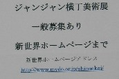
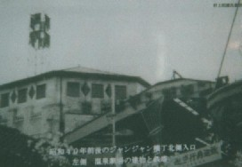
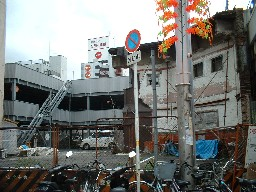
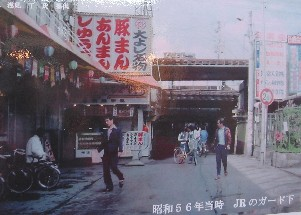
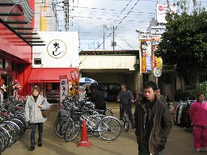

本格的にブーマンのことを調べ始めたのは、今から22年前。じゃんじゃん横丁へ出かけたり、伝手（つて）をたよりに関係者に話を聞き歩いたり。そんなんで、だいたいの事はそのころ調査できた。今回アップした由来記は、そのころ調べたことが下地になっている。
サイトをオープンして満３年、どうして今までにupしなかったのかと云えば、要はwebへupするのには調査不足と感じていたから。じっさい今回アップしたなかで、温泉会館のオーナーの名前、ブー麻雀という名称の由来など、肝心なことがいくつか分かっていない。
もちろん22年間、折に触れては調べててきた。しかし関係者も多くの方が亡くなっており、なかなかはかどらない。知りたいことも、いつ判明するかも分からない。そこで不明な事はとりあえずそのままとして、いままでに判明したことだけでもアップすることにした次第。
とはいうものの、やはり良心がとがめる。(^-^； そこで念のため、今年の春と秋、もう一度、大阪へ足を運んだ。やはり足を運んだことだけはあって、何かと収穫はあった。その中のエピソードを一つ。
いまでもじゃんじゃん横丁はにぎわっている。しかし以前に較べると、いま一つ。それにはこんな理由もある。
バブル全盛の頃、大手不動産会社がこの横丁に乗り出してきた。そして横丁内の土地買い占めを始めた。ある程度買い占めたところで、バブル崩壊。とうぜん某不動産会社もぐ〜らぐら。買い占めた場所は、空き地のまま放置された。それがちょうど、じゃんじゃん横丁のど真ん中のあたり。

イラスト地図の右側、真ん中あたりの店舗が黄色でペイントされている。実はここに店舗はない。店舗数で云えば６軒分ほど、まったくの空き地。建設会社のトタン壁が張りめぐらされている。肝心要めのど真ん中が空き地では、集客のインパクトに欠ける。そこで、ちとさびしい人通りとなっている。
そこで昨年の春から横丁活性化のために、そのトタンの壁面を利用して、戦前から現在までの横丁、および新世界の移り変わりを写真パネル展示されている。これをじゃんじゃん横丁美術展と称しているそうだ。

この美術展、σ(-_-)が横丁を訪れたときにはすでに行われていた。（ほうほう）と感心しながら見ていたら、資料提供を要請するパネルを見つけた。

なるほどと思いながら見直すと、たしかに昭和４０年代から５０年代にかけての写真が少ない。また温泉会館といえば、或る意味、じゃんじゃん横丁のシンボルともいえる建物。それが昭和40年ころの遠景モノクロ写真だけ。

近景としては、取り壊された跡に残った白い壁のカラー写真だけ。

そこで関係者と連絡を取り、σ(-_-)が22年前に撮った写真を提供することにした。提供した写真はいろいろある。すると実行委員会の人からは、「展示会は今年いっぱい続ける予定。そこで順次差し替える形で、展示して行きたい」と返事があった。もちろん役に立ちさえすればいいので、どういう順で展示されようと、何の問題もない。
ということで、これ↓が、とりあえず展示された、ＪＲガード南の22年前の写真。

左上に白抜きで「浅見了氏提供」とロゴが入ってる。
こっちが現在の同じ場所。

ずいぶん喜ばれたが、「遠方の人が、どうしてこんなにじゃんじゃん横丁の写真を持っているのか」と不思議がられたり、「地元の人より、ブーマンのことに詳しいですねぇ」と感心されたりした。(^-^；
|